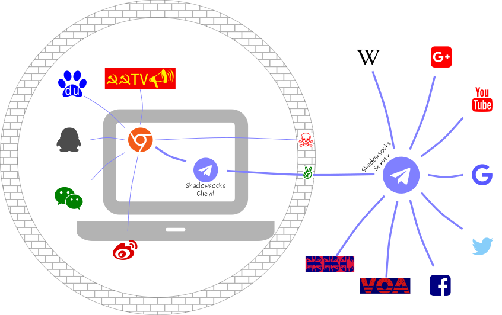
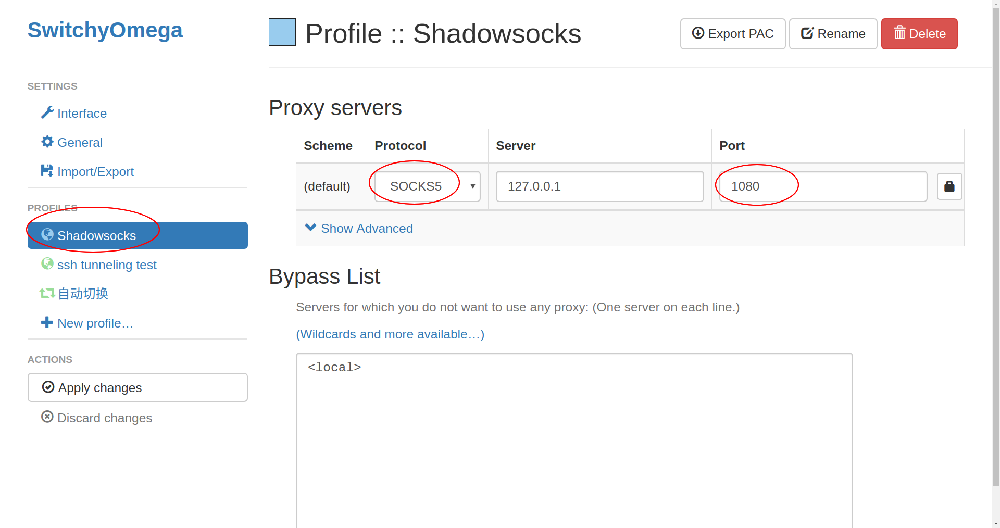

How to setup Shadowsocks in Debian
Table of Contents
1 The big picture
About Shadowsocks, please visit: http://shadowsocks.org/en/index.html. Basicly it's a kind of VPN service that can be used to bypass the great firewall built by YOU KNOW WHO.

There are Shadowsocks client software for all the main stream operating systems, including MS-Windows, all desktop Linux, Android, MAC OSX, iOS. Here I only give you a brief introduction on how to setup and use it in the Debian GNU/Linux system which is my favorite.
What you need besides Debian:
- A Shadowsocks client software.
- A Google Chrome web browser with a proxy extension installed.
- A Shadowsocks server. There are some free (and usually not so stable) servers can be found on the web; There are also a lot of paid Shadowsocks services available for approximately 100RMB/year; And also you can buy cloud service, e.g. Google cloud, and then install your own Shadowsocks server on your own cloud. Whatever, you have to manage to get a server yourself, otherwise you can't setup a working Shadowsocks link.
2 Shadowsocks client installation
sudo apt update sudo apt install shadowsocks-libev
Easy, eh?
3 Shadowsocks client configuration
Example config file: /etc/shadowsocks-libev/config.json
1: { 2: "server":"127.0.0.1", 3: "server_port":8388, 4: "local_port":1080, 5: "password":"fuPodNics", 6: "timeout":60, 7: "method":"chacha20-ietf-poly1305" 8: }
Line by line explanation：
- Left curly bracket indicates the beginning of the config file;
- The IP address, or the domain name, of the Shadowsocks server. Remember? You have to find a server yourself, either a free one or a paid service;
- The port number used by the server. A connection will be setup between your local port (usually port 1080) and this server port;
- The port number of the client you just installed. Usually it's 1080. Your web browser will pass all the data to this port of your client. Then your client will encrypt the data and send it to the server port through the ready-setup Shadowsocks connection;
- The password needed when your client accesses the server;
- Timeout if the client can't connect to the server in 60 seconds;
- The encryption method to be used by the server;
- Right curly bracket indicates the end of the configuration.
If you have more than one server to use, you have to write a config file for each
server. And you can only use one at a time. For example, assuming you have two config
files (a.json, and b.json) in your /etc/shadowsocks-libev/ directory, and
you started a Shadowsocks process by using the following command:
ss-local -v -c /etc/shadowsocks-libev/a.json
Sometime later, you see a lot of screen output like the following:
2018-08-31 19:37:50 ERROR: server_recv_cb_recv: Connection reset by peer 2018-08-31 19:37:50 ERROR: server_recv_cb_recv: Connection reset by peer 2018-08-31 19:37:50 ERROR: server_recv_cb_recv: Connection reset by peer 2018-08-31 19:37:50 ERROR: server_recv_cb_recv: Connection reset by peer 2018-08-31 19:37:50 ERROR: server_recv_cb_recv: Connection reset by peer
This indicates the connection is gone. Then you can switch to b.json by:
- Typing
Ctrl-cto stop the current Shadowsocks process; Starting a new process by:
ss-local -v -c /etc/shadowsocks-libev/b.json
4 Google Chrome extension installation and configuration
The extension we need is Proxy Switchy Omega. It can help you easily switch on/off the proxy. It's not strictly mandatory. Without it, you can bypass the GFW like this:
ss-local -v -c /etc/shadowsocks-libev/b.json google-chrome --proxy-server='socks5://127.0.0.1:1080'
But in this way, you cannot switch the proxy off even when you visit baidu.com.
Usually, the Chrome extensions can only be installed via Chrome Web Store. Unluckily, it's blocked by YOU KNOW WHO. So you can use the above two commands to visit Chrome Web Store, and install the Proxy Switchy Omega extensions.
After successfully installed Proxy Switchy Omega, you should close your Google Chrome
window, and then re-open it, by typing just google-chrome without followed by any
options. At the upper right corner of the browser window, you should find the circle
logo of Proxy Switchy Omega. Now it's time to configure it.
A picture is worth a thousand words, right?
 And Proxy Switchy Omega needs a set of rule to decide when to trigger the Shadowsocks proxy on/off. You can find a ready-to-use rule set here.
Summary:
Start your local Shadowsocks agent first:
ss-local -v -c /etc/shadowsocks-libev/b.json
- configure Proxy Switchy Omega, and usually put it in auto switch mode.
Enjoy hacking!